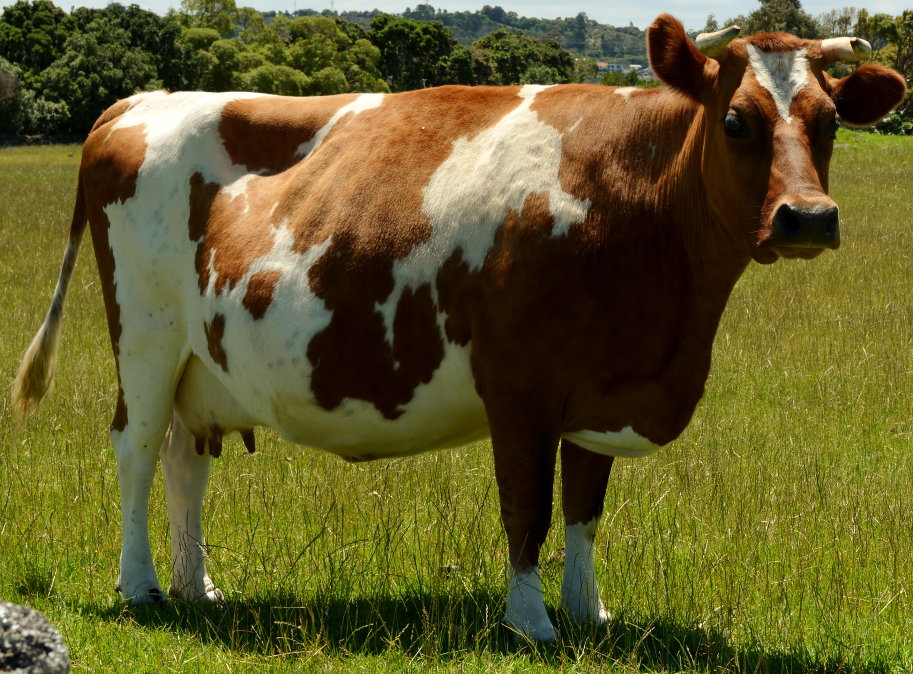

Cow urine has high levels of nitrogen.Too much nitrogen for the grass means it seeps down into the ground water, which then makes its way to the streams, rivers and lakes.
Dairy farming is a huge part of New Zealands economy but systems need to be put in place so that New Zealands waters aren't getting polluted.
Dairy farming is a huge part of New Zealands economy but systems need to be put in place so that New Zealands waters aren't getting polluted.